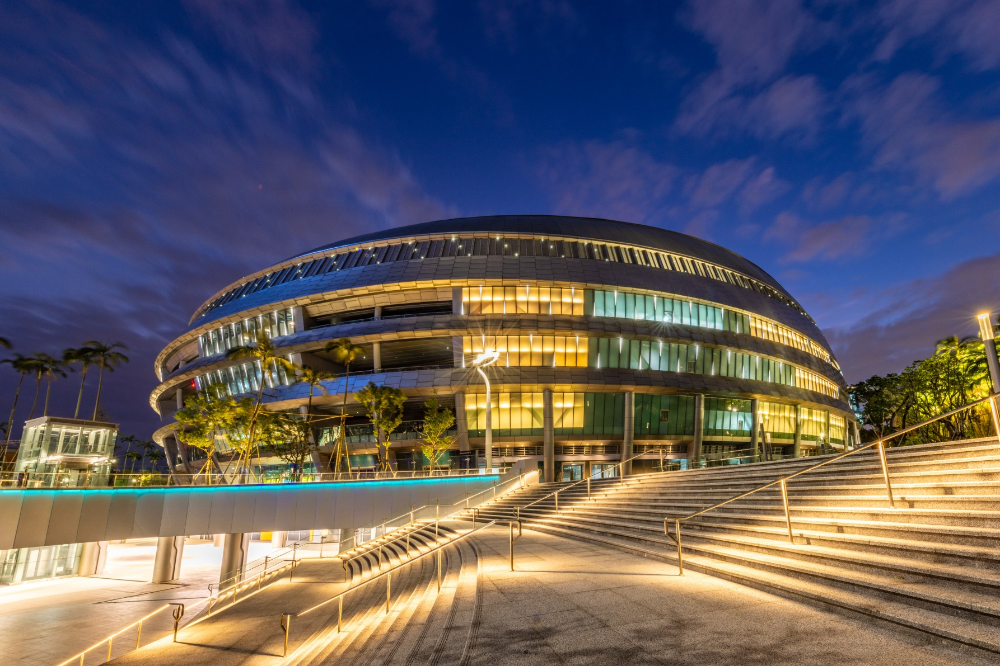
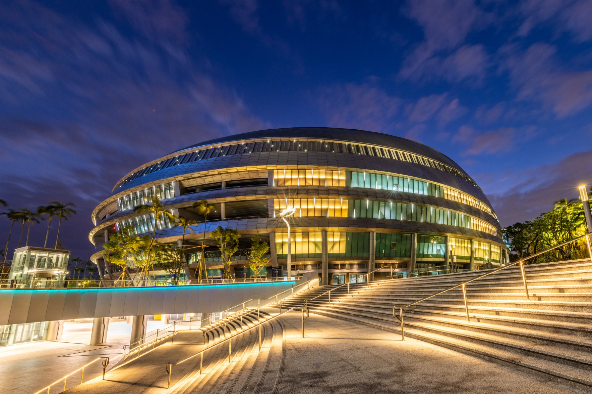

關於台北大巨蛋
臺北大巨蛋，或稱臺北文化體育園區、臺北巨蛋，是位於臺灣臺北市信義區的多功能室內棒球場，也是臺灣最大的室內運動場館，為了跟早已啟用的臺北小巨蛋區別，因此稱為「臺北大巨蛋」。
巨蛋園區坐落於光復南路、忠孝東路與市民大道之間，並相隔忠孝東路與國父紀念館對望。由臺北市政府以BOT模式交給遠雄集團旗下的遠雄巨蛋公司興建及營運到2062年，園區設置的項目除巨蛋外，另有百貨商場、商店街、影城、飯店、辦公大樓等附屬商業設施。

臺北大巨蛋，或稱臺北文化體育園區、臺北巨蛋，是位於臺灣臺北市信義區的多功能室內棒球場，也是臺灣最大的室內運動場館，為了跟早已啟用的臺北小巨蛋區別，因此稱為「臺北大巨蛋」。
巨蛋園區坐落於光復南路、忠孝東路與市民大道之間，並相隔忠孝東路與國父紀念館對望。由臺北市政府以BOT模式交給遠雄集團旗下的遠雄巨蛋公司興建及營運到2062年，園區設置的項目除巨蛋外，另有百貨商場、商店街、影城、飯店、辦公大樓等附屬商業設施。
